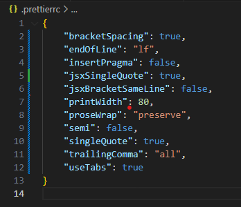

1.2- Formatação do código
1.2.1- Evitar comentários
Os nomes dos componentes, funções, objetos, variáveis e argumentos devem ser autoexplicativos o suficiente, de modo a tornar os comentários desnecessários.
Se os nomes forem autoexplicativos e o código estiver limpo e legível, a maioria dos comentários se tornarão dispensáveis e redudantes, e sua presença, além de dificultar a leitura do código, poderá levar a erros, ao ocorrerem modificações no código, sem a correspondente atualização do comentário original.
Entretanto, os seguintes tipos de comentário são úteis e, às vezes, necessários:
- Avisos de natureza jurídica
- Premissas ou pré-condições para executar uma função
- Explicações sobre algo implícito: por exemplo Regex
- TO DOs (Modificações futuras no código)
Exemplos de comentários úteis:
function processPayment(cardNumber, expDate, cvv, amount) {
/*
This function processes credit card payments
Legal: This code must comply with PCI DSS standards.
Preconditions: The transaction amount must be > $0.
Limitations: This function only supports Visa and Mastercard payments.
*/
// Function code goes here ...
}
// accepts [text]@[text].[text], i.e. it simply requires an "@" and a dot
const emailRegex = /\S+@\S+\.\S+/;
1.2.2- Formatação horizontal
- Máximo de 80 caracteres por linha
- Usar identação para expressar o escopo
- Não usar ponto e vírgula ao final das declarações, a menos que necessário...
- Usar aspas simples nas literais de strings e nomes de propriedades
- Para garantir as regras acima, crie ou substitua o arquivo de nome '.prettierrc', na pasta raiz do projeto, com o seguinte objeto:

Isto fará com que o plugin prettier salve o arquivo fonte com as regras de formatação horizontal, definidas acima.
1.2.3- Formatação vertical
- As funções chamadoras devem estar acima das funções chamadas, sempre que possível.
- Mantenha conceitos relacionados próximos, ou seja, idealmente, mantenha as funções chamadas imediatamente abaixo de suas funções chamadoras.
- Use linhas em branco para separar conceitos não relacionados diretamente.
- Nos componentes React, os grupos de elementos devem vir na ordem abaixo:
- states
- funções que tratam eventos da renderização ou são passadas para sub-componentes
- useEffects (Se houver uma sequência de atualização, dispô-los na ordem em que são chamados pela atualização dos states), e suas funções associadas
- funções que cooperam com a renderização, cujo nome deveria começar com render.
(Idealmente, cada uma destas funções deveria ser transformada em um componente React separado, mas em casos de funções bem pequenas, talvez seja mais legível deixá-las, aqui, no componente cliente ) - return de renderização do componente
- states